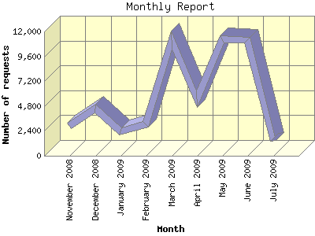

Analog 6.0
Analog 6.0 Report Magic 2.21
Report Magic 2.21The Monthly Report identifies activity for each month in the report
time frame. Remember that each page hit can result in several server requests
as the images for each page are loaded.
Note: Depending on the
report time frame, the first and last months may not represent a complete
month's worth of data, resulting in lower hits.

| Month | Number of requests | Percentage of the requests | |
|---|---|---|---|
| 1. | July 2009 | 1,459 | 2.74% |
| 2. | June 2009 | 11,127 | 20.91% |
| 3. | May 2009 | 11,203 | 21.06% |
| 4. | April 2009 | 5,467 | 10.28% |
| 5. | March 2009 | 11,166 | 20.99% |
| 6. | February 2009 | 3,063 | 5.76% |
| 7. | January 2009 | 2,342 | 4.40% |
| 8. | December 2008 | 4,525 | 8.51% |
| 9. | November 2008 | 2,850 | 5.36% |
Most active month May 2009 : 11,203 requests handled.
Monthly average: 5,911 requests handled.
This report was generated on July 5, 2009 11:22.
Report time frame November 4, 2008 08:13 to July 4, 2009 23:06.
| Web statistics report produced by: | |
| Analog 6.0 | Report Magic 2.21 |